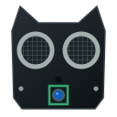

Goal
The goal was to assemble a Raspberry Pi-based robot dog and understand how its mechanical structure, servo motors, and sensors work together. The project focused on connecting software with physical hardware through a hands-on build.

DONALD / PROJECTSPROJECT OVERVIEW
A quadruped robot built from a Robot Dog Kit,
combining a Raspberry Pi, servo motors, and sensors.
The goal was to assemble a Raspberry Pi-based robot dog and understand how its mechanical structure, servo motors, and sensors work together. The project focused on connecting software with physical hardware through a hands-on build.
The build used acrylic frame parts, servo motors, a Raspberry Pi, a servo control board, an ultrasonic sensor, and a camera. I assembled the body and four legs, mounted the motors and circuit boards, and connected the power leads, servo cables, and camera ribbon cable.
I used Visual Studio Code to edit the project code and set up the development environment on the Raspberry Pi. The work covered both the physical assembly and the software setup needed to develop the robot.
The robot's physical assembly was completed and documented with photos of the parts, assembled robot, and development setup. An interactive 3D page was also built with HTML, CSS, JavaScript, and Three.js. Visitors can rotate and zoom the model, inspect its exploded and X-ray views, and play a simulated walking animation.
PROJECT PHOTOS